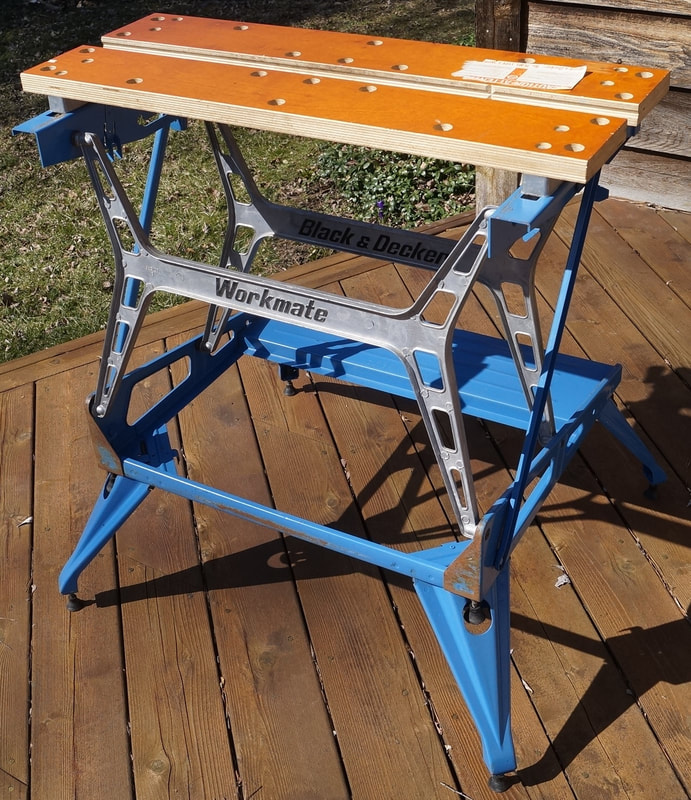
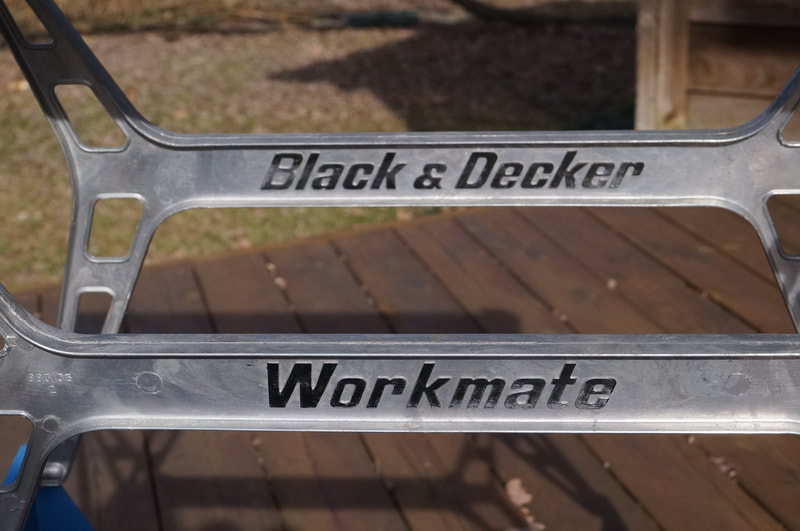
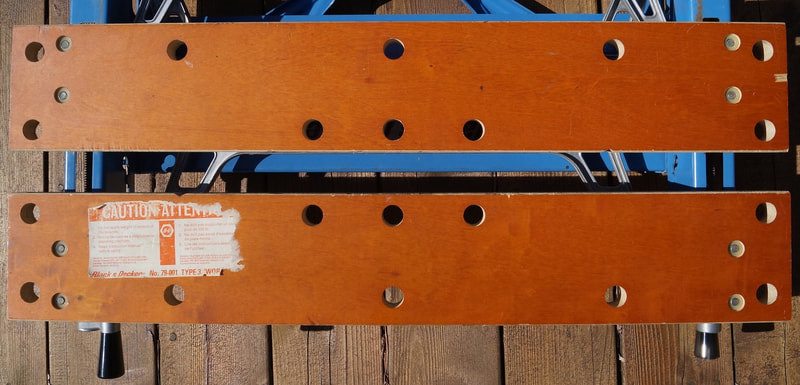
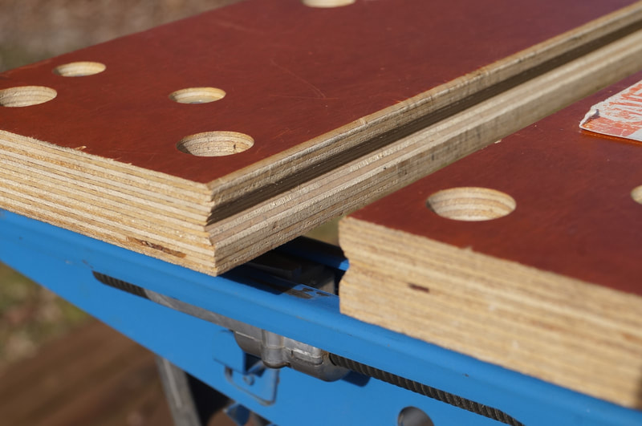
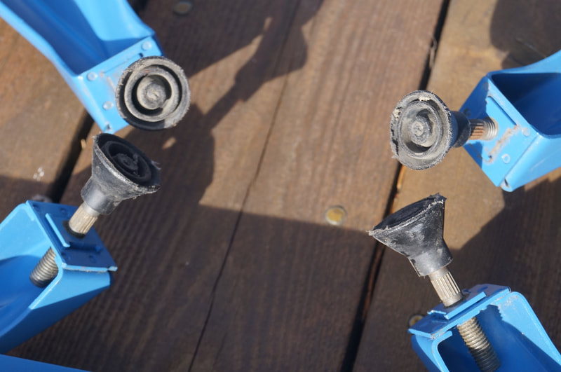
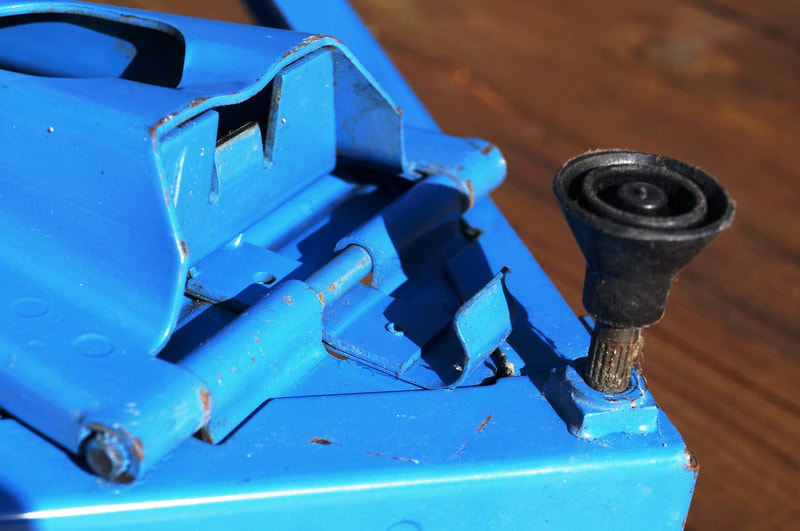
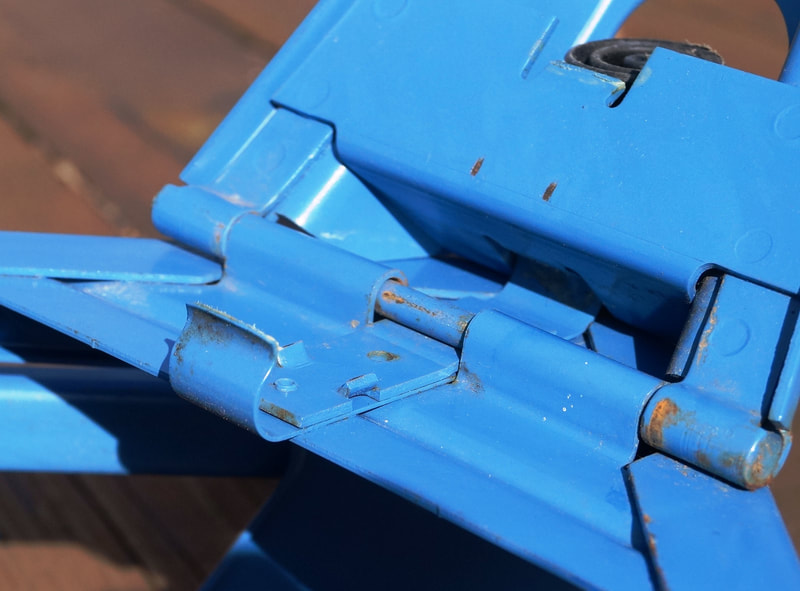
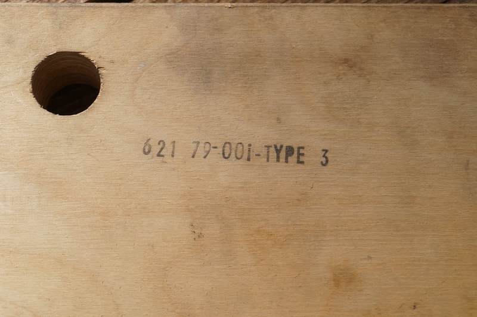
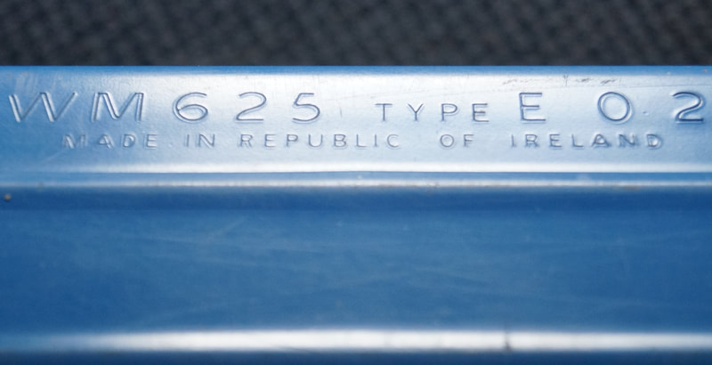

How to Recognize It
The blue paint, the aluminum H-frames, and the 4-rib step without cross-ribbing identify a Type 3.
See the gallery of detail photos below. The Workmate 79-001 Type Study spreadsheet shows how all ten Types compare.
Black & Decker Workmate 79-001 Type 3
The Type 3 is a special case of the 79-001, because it was manufactured in Ireland while the Types 1 and 2 before it and the Type 4 after it were manufactured in Canada. Why would this be? In 1976, the Workmate 79-001 was selling as fast as Black & Decker could make them in Brockville. My guess is this prompted them to temporarily import the WM625 Type E02 from their factory in Ireland to the U.S. They relabeled it as the 79-001 Type 3 and sold it interchangeably with the Type 2 for several months. See the 79-001 Timeline page for more details. I have also written about the Type 3 in my blog. The Type 3 is relatively rare today, so they probably did not import very many.
Notable Characteristics
Component Changes
Notable Characteristics
- The European model number is stamped into the steel along the rear edge of the step. It appears that they imported Workmates directly from the Irish factory, and then labeled them as 79-001's when they reached the U.S.
- The Type 3 has the same style of jaw label as the Type 2. The model and type number are stamped on the bottom surface of the jaw along with a shortened Brockville production code that tells only the year and week of manufacture.
- The standout visual feature of the Type 3 is the blue paint on all of the steel frame pieces.
- The Type 3 has the first single-layer jaws on a 79-001. They are a slightly thicker plywood than the earlier ones, but don't have the double layer at the edge where the jaws meet. The jaws have 10 holes and are attached to solid aluminum blocks below. The four mounting bolt holes in each jaw are about 5/8" in diameter, with an embedded nylon nut instead of the steel insert used on the Type 1.
- The cast H-frames are reversed from their orientation on most other Workmates. The "Workmate" sides face outward, while the "Black & Decker" sides face inward. Some Type 3's use all upper case for the "WORKMATE" imprint on the H-frames. Only the Type 5 shares this feature.
- The vise-handle arms have the cast-in "B&D" logo from the Type E.
- All eight feet are adjustable, with the 79-001's third different style of cone-shaped pads. The threads are metric, like the Type E.
- The spring-steel catches that latch the folding legs are shaped differently and operate slightly differently from the Type 1 and Type 2. The part of the leg that engages with the catch now slides down the inner side of the catch and latches there instead of sliding over and latching on the outer side of the catch.
Component Changes
- I have seen two Type 3's with blue nylon bushings at the pivot points of the H-frames, like those used on the Type 5. Both of these had date codes 637.
Click on any image below to open the gallery of full-screen images.




















